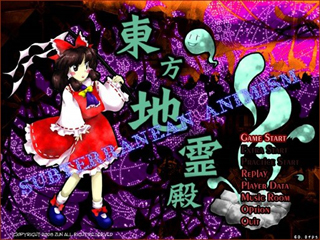

忌み嫌われた弾幕
東方地霊殿 ～ Subterranean Animism.

「東方地霊殿 ～ Subterranean Animism.」は少女弾幕シューティング（ＳＴＧ）です。
今作品は地下と温泉をこよなく愛する作者のためのゲームです。
＊このゲームには過激な弾幕シーンが含まれております
小さなお子様や、弾幕アレルギーの方は医師に相談してください。
動作環境
必須環境
ＯＳ
Windows 2000/XP
なお、DirectX 9 (March 2008) 以降の最新版がインストールされていること
ＣＰＵ
Pentium 以降（もしくは互換）のCPU （推奨 1GH以上）
ビデオカード
DirectX9以上の DirectGraphic 対応の高速なビデオカード(推奨 VRAM 32M以上)
推奨環境
サウンド
Direct Sound対応のサウンドカード
その他
パッドコントローラ
ある程度の弾幕免疫
ダンジョンを愛する心
＊本パッケージは体験版です。
製品版は、２００８年夏、発表予定です
体験版では以下の制約があります。
・３面までしかプレイできない。
・プラクティススタートが使用できない。
・エキストラスタートが使用できない。
体験版という性質上、何の予告も無しに仕様が変更される事もあります。
このプログラムを使用して起きたいかなるマシントラブルも、こちらでは対処いたしません。
自己責任の元、プログラムを起動してください。
バグなどありましたら
zun@big.jp
まで報告していただける
と嬉しいです。
１．概要
２．バックストーリー
３．プレイヤーキャラ紹介
４．操作方法
５．タイトル画面
６－い．システム 基本操作
６－ろ．システム 攻撃システム
６－は．システム アイテム
６－に．システム 信仰ポイント
６－ほ．システム エクステンド
６－へ．システム 小ネタ
７．ＦＡＱ
作者のページへ
プログラム本体、イメージデータ、曲データ、及びマニュアル全ての著作権は製作者ＺＵＮにあります。
著作者の許可無しで複製、転載、配布を禁じます。
2008 (C)opyright ZUN. All rights reserved.